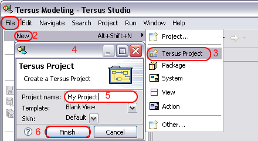
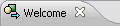
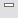
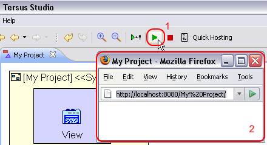
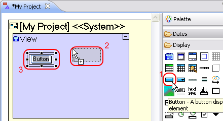
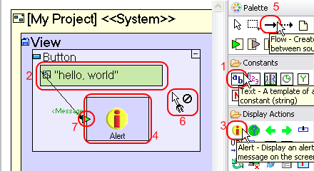
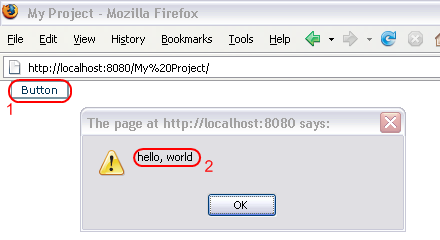

在 30 秒内开始
| 1) 创建新项目 |

一旦你点击 完成, 你应该提出这项文件到底部窗口的工作室，它会显示自己的工作室，但仍允许您按照这里给出的指示。
要做以上，请双击  标签，或单击  (Restore) 按钮，可发现在顶部的 Welcome 窗口。 工作室打开新项目的模型, 可编辑在模型编辑器(在右侧)，而一个列表项目, 其中包括预安装的示例项目，将显示在 存储库浏览器 (在屏幕的左边)。 |
|
2) 使用新的应用程序 |
| 
点击 Launch the
application (1) 按钮, 在工作室的主工具栏中,加载您的应用程序在嵌入的 rhstudio服务器中，并打开一个网页浏览器 (2).
应用程序未显示任何内容，因此，让我们模型显示的东西。 |
|
3) 添加您自己的建模 - 即时结果 |
| 
我们必须现加我们自己的建模到应用程序，显示消息 hello, world 当一个按钮被点击。
|

|

|
|
4) 下一步? |